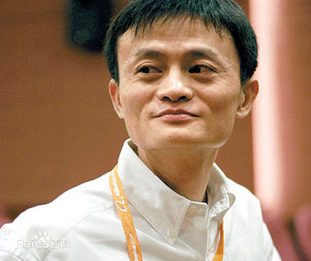

马云，男，1964年9月10日生于浙江省杭州市，祖籍浙江省嵊州市（原嵊县）谷来镇， 阿里巴巴集团主要创始人，现担任阿里巴巴集团董事局主席、日本软银董事、大自然保护协会中国理事会主席兼全球董事会成员、华谊兄弟董事、生命科学突破奖基金会董事。
1964年9月10日出生于浙江省杭州市，马云的爷爷抗战时做过保长，解放后被划为“黑五类”，取名为“马云”，就是希望马云以后乖巧懂事，少惹是非。12岁时，马云买了台袖珍收音机，从此每天听英文广播，对英语开始感兴趣，13岁起，马云因为打架记过太多，曾被迫转学到杭州八中。之后马云参加中考，考了两年才考上一所极其普通的高中，其中一次数学只得了31分。
1982年，马云第一次参加高考，首次落榜，数学只得了1分。马云充满了挫败感，之后他跟表弟到一家酒店应聘服务生，结果表弟被录用，自己惨遭拒绝，老板给出的理由是马云又瘦又矮，长相不好。后来马云做过秘书、搬运工人。马云高考落榜，父亲马来法见他意志消沉，让他蹬三轮给杂志社送书。
1983年，马云第二次参加高考，再次落榜，数学提高到了19分。马云的父母劝他死了上大学的心，好好学门手艺，之后马云又开始骑着那辆破旧的自行车，穿梭于杭州的大街小巷。
1984年，马云不顾家人的极力反对第三次参加高考，这次数学考了89分，但总分离本科线还差5分。由于英语专业招生指标未满，部分英语优异者获得升本机会，马云被杭州师范学院破格升入外语本科专业。进入大学后，马云变成了品学兼优的好学生，凭借出色的英语稳坐外语系前五名。之后马云当选学生会主席，后来还担任了两届杭州市学联主席。
1988年，马云从杭州师范学院外国语系英语专业毕业，获文学学士学位，之后被分配到杭州电子工业学院(现杭州电子科技大学），任英文及国际贸易讲师。之后马云成为杭州市优秀青年教师，发起西湖边上第一个英语角，开始在杭州翻译界有名气。
1992年，由于很多人来请马云做翻译，马云成立海博翻译社，请退休老师做翻译。为生存下去，马云背着大麻袋到义乌、广州去进货，海博翻译社开始卖鲜花，卖礼品，还曾经销售过一年的医药，推销对象上至大医院，下至赤脚医生。
1994年，海博翻译社营收持平。其中来自西雅图的外教比尔和马云聊互联网，马云开始寻找机会决定创业。
1995年年初，海博翻译社开始赚钱。马云作为翻译来到洛杉矶沟通落实一起高速公路投资未果后。从洛杉矶飞到西雅图找比尔，比尔领马云去西雅图第一个ISP公司VBN参观。
1995年3月，马云从杭州电子工业学院辞职，自己拿出六、七千元，向妹妹、妹夫借了一万多，凑足了2万元准备创业。
1995年4月，中国第一家互联网商业公司杭州海博电脑服务有限公司成立。三名员工是马云、马云夫人张瑛和何一兵。
1995年5月，中国黄页正式上线，马云开始从身边的朋友做生意。此时，离中国能上Internet还有3个月。
1995年7月，中国黄页为浙江省外宣办做了一个网站，在网上宣传浙江的经济文化，名曰“金鸽工程”。
1996年3月，由于杭州电信也做了一个中国黄页，分食市场，马云决定和杭州电信合并。中国黄页作价60万元，占30%股份，杭州电信投现金140万人民币，占70%股份。
1997年，在得到外经贸部进京成立中国国际电子商务中心（EDI）邀请后，马云决定放弃中国黄页。他将自己所持的21%中国黄页以每股2、3毛钱的价格贱卖给了公司，拿回10多万元。之后马云和他的团队在北京开发了外经贸部官方网站、网上中国商品交易市场、网上中国技术出口交易会、中国招商、网上广交会和中国外经贸等一系列网站。
1999年3月，马云正式辞去公职，后来被称为18罗汉的马云团队回到杭州，凑够50万元人民币开始了新一轮创业，开发阿里巴巴网站。
1999年4月15日，阿里巴巴网站正式上线。Invest AB副总裁蔡崇信听说阿里巴巴后，飞赴杭州洽谈投资，在和马云谈了4天后，决定辞职加入阿里巴巴。
1999年10月和2000年1月，阿里巴巴两次共从软银等国际投资机构融资2500万美元。
2003年5月10日，马云创立淘宝网，开始抢夺eBay易趣C2C市场。
2004年12月，马云创立第三方网上支付平台支付宝。
2005年8月17日，雅虎宣布以10亿美元现金和雅虎中国全部资产为代价，同时获雅虎10亿美元投资，换取马云创办的阿里巴巴40%的股份和35%的投票权，马云出任中国雅虎董事局主席。
2007年11月，马云创立的阿里巴巴网络有限公司在香港联交所主板挂牌上市。
2008年10月31日，阿里巴巴有限公司和杭州师范大学合作共建杭州师范大学阿里巴巴商学院，马云出任董事长。
2013年5月10日，马云正式卸任阿里巴巴集团CEO，陆兆禧接替马云出任阿里巴巴集团首席执行官。
2013年5月28日，阿里巴巴集团联合银泰集团、复星集团、富春集团、顺丰、中通、圆通、申通、韵达等多家民营快递企业联合成立菜鸟网络科技有限公司，并同时启动中国智能骨干网（CSN）项目建设，马云出任菜鸟网络科技有限公司董事长。
2014年9月19日，阿里巴巴集团于纽约证券交易所正式挂牌上市。
2015年10月23日，《2015信中利·胡润IT富豪榜》发布，51岁的马云及其家族以1350亿元资产蝉联中国IT业首富，在13年里财富增长540倍。
2015年10月26日，2015年福布斯中国富豪榜在北京发布，马云以218亿美元财富，排名第二。
2015年11月4日，马云名列《福布斯》全球最有权力人物排行榜第22位。
2016年10月27日，2016福布斯中国富豪榜公布，马云以282亿美元财富，排名第二位。
2017年2月4日，阿里巴巴集团澳大利亚新西兰总部揭幕典礼在澳大利亚新南威尔士州举行。典礼上，浙商总会会长、阿里巴巴集团董事局主席马云表示，要将“让天下没有难做的生意”的理念带到大洋洲。